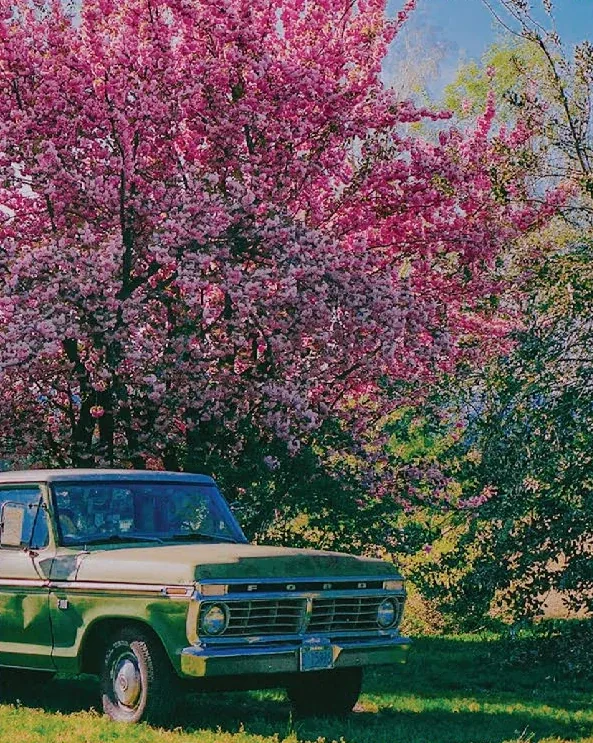
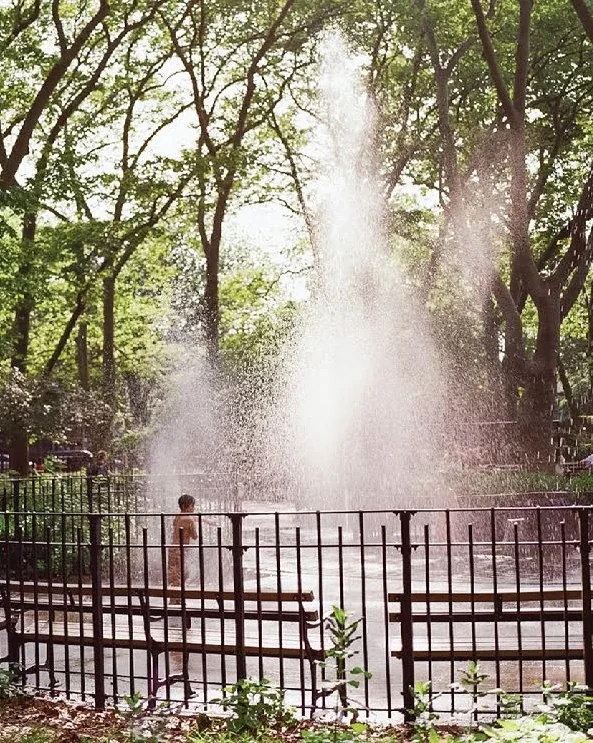
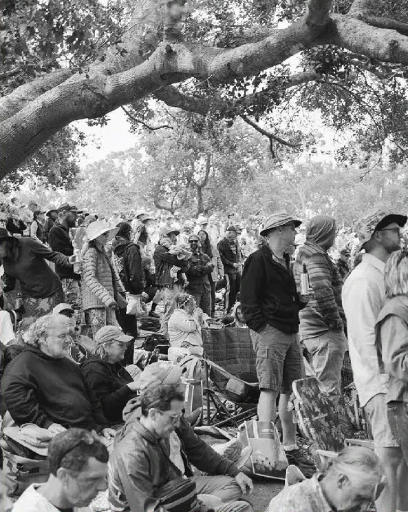
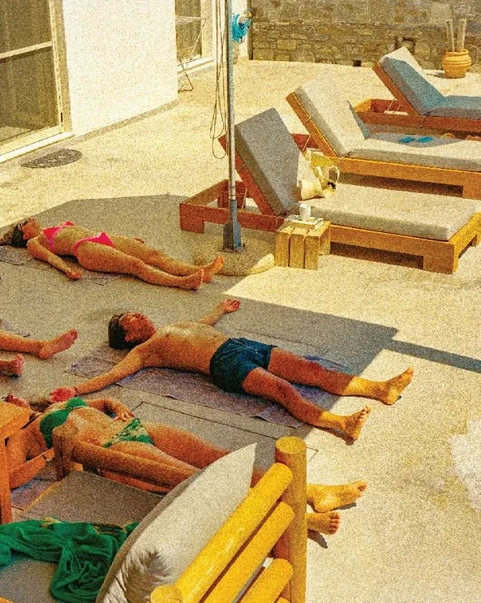
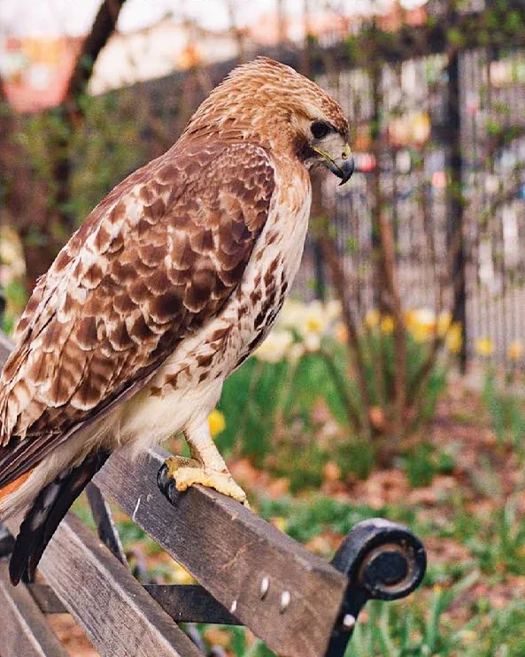

Photography & art direction
The image edit
Six photographs I brought together for Meadow Maker. On a pouch, each image shares a small rectangle with a wordmark and a flavor. Here there’s room to look at the pictures on their own.











Image selections from the September 2026 Meadow Maker packaging proofs. See the artwork in print.